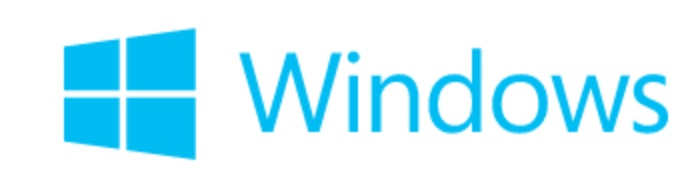

# Introduction to Python
## What is Python?
* Python is an interpreted, object-oriented, high-level programming language
* High-level built in data structures
* Dynamic typing
* Attractive for Rapid Application Development
* Use as a scripting or glue language to connect existing components together
* Immense growth in the data science environment
* Large standard library (Batteries Included)
* Been around for 25 years
* Free and Open Source
## Resources
# Who uses Python?
# Python variants and implementations
## Python Implementations
| Implementation | Platform | Logo |
|---|---|---|
|CPython - reference| | |
|PyPy| | |
|IronPython| | |
|jython| | |
|MicroPython| | |
## Resources
## Where does it run?
| Platform| |
|---|---|
| GNU/Linux | |
| Windows | |
| Macintosh | |
| IOS | |
| Android | |
| Microprocessors | |
| RaspberryPi | |
| [ somewhere in your house ] | |
## Resources

# Python applications
* Web and Internet development
* Data analysis
* Numerical processing
* Video and audio editing (ILM)
* Web scraping
* Education
* Desktop applications
* Software Development
* Operating systems
* System administration
# Language basics
* linked to notebook for basics
# Standard library functions
* Batteries included
* Almost everything you need is included
* `os`- Working with the operating system
* `httplib`- Grabbing web pages
* `email` - Sending email
* `glob` - Using glob for filename wildcards
* `math` and random
* `unittest`- Unit testing framework
* `timeit`- Measure execution time of small code snippets
* `datetime` - Working with dates and times
* `zipfile`, `tarfile`- Working with compressed files
* ( ... many, many more ..)
* [Complete Library](https://docs.python.org/library/)
#Python 2 vs 3
# Compiled vs. Interpreted
Python vs. Matlab
# Python vs. Matlab
## Python compared to Matlab (facts)
* Python, by definition, is a programming language.
* Matlab is a popular numerical computing environment
* The standard library does not contain as much generic programming functionality, but does include matrix algebra and an extensive library for data processing and plotting.
* To get similar functionality in Python, you'll need the NumPy, SciPy and Matplotlib packages.
## So, what’s wrong with Matlab?
Not much
* The algorithms are proprietary,
* Expensive.
* Matlab is releasing a new version every 6 months
* It makes portability more difficult.
* Difficult for 3rd parties to extend or create tools for Matlab
## Advantages of Matlab
* It has a solid amount of functions.
* Simulink is a product which is simply not available elsewhere.
* It has a large scientific community; it is used on many universities (but few companies have the money to buy a license).
## Advantages of Python
* Free
* You can use it everywhere
* Powerful
* Namespaces
* Introspection
* String manipulation
* Portability
* Indexing
# Resources
# Python weaknesses
* Slower than compiled languages
# Python distributions
* Installing some modules require compilation (c++, Fortran)
* Can create frustration to install dependencies
* Download and install a free distribution like
* Anaconda (http://continuum.io/)
* Enthought (https://www.enthought.com)
* 270+ packages
* No modification to system path
* Have taught Python - Linux, Mac, Windows without any problems
* Package management and Environments
* [more distributions here](https://wiki.python.org/moin/PythonDistributions)
# Python IDE's
* Integrated Development Environments is a personal choice
* Many options exists
* After countless hours of searching recommend...
# Free
* Spyder bundled with Anaconda [Demo]
* Enthought Canopy
* Python tools for Visual Studio
* PyDev for Eclipse
* Rodeo by yhat
# Commercial
* PyCharm (has community edition for free)
source activate spyder
source deactivate
connect to remote kernel from spyder
# Python GUI development
* I have found this to be `non` trivial
* Pyside (QT) - PySide is a Python binding of the cross-platform GUI toolkit Qt.
* Kivy - Kivy - Open source Python library for rapid development of applications
that make use of innovative user interfaces, such as multi-touch apps.
Kivy runs on Linux, Windows, Mac, Android and iOS (could not get this workin)
* KivEnt
* Camelot
* Tk
* mayavi - scientific apps
# Pyside Sample Code
import sysfrom PySide import QtGui
app = QtGui.QApplication(sys.argv)
win = QtGui.QWidget()
win.resize(320, 240)
win.setWindowTitle("Hello, World!")
win.show()
sys.exit(app.exec_())
Notebooks
# Plotting
* Matplotlib
* Bokeh
* ggplot (R) ported
[Example Notebook - Matplotlib]()
[Example Notebook - mpld3 ]()
# Interactive Widgets
* Link to LDE
# Scientific Python building blocks (Numpy, Statsmodels, SciPy, Natural Language, Sympy, and Astronomy)
---------------------------------------------------------------
# Numpy
NumPy is the fundamental package for scientific computing with Python. It contains among other things:
* a powerful N-dimensional array object (Matrix)
* sophisticated (broadcasting) functions
* tools for integrating C/C++ and Fortran code
* useful linear algebra, Fourier transform, and random number capabilities
* Besides its obvious scientific uses, NumPy can also be used as an efficient multi-dimensional container of generic data.
* Arbitrary data-types can be defined.
* This allows NumPy to seamlessly and speedily integrate with a wide variety of databases.
# Pandas
pandas is an open source, BSD-licensed library providing high-performance, easy-to-use data structures and data analysis tools for the
Python programming language.
* analog to R - data.frame
* tabular and time series data
* think excel
* introduction - http://nbviewer.ipython.org/gist/wesm/4757075/PandasTour.ipynb
# Sympy
* SymPy is a Python library for symbolic mathematics.
* It aims to become a full-featured computer algebra system (CAS) while keeping the code as simple as possible in order to be comprehensible and easily extensible.
* SymPy is written entirely in Python and does not require any external libraries.
# Statsmodels
Statsmodels is a Python module that allows users to explore data, estimate statistical models, and perform statistical tests. An extensive list of descriptive statistics, statistical tests, plotting functions, and result statistics are available for different types of data and each estimator. Researchers across fields may find that statsmodels fully meets their needs for statistical computing and data analysis in Python. Features include:
* Linear regression models
* Generalized linear models
* Discrete choice models
* Robust linear models
* Many models and functions for time series analysis
* Nonparametric estimators
* A collection of datasets for examples
* A wide range of statistical tests
* Input-output tools for producing tables in a number of formats (Text, LaTex, HTML) and for reading Stata files into NumPy and Pandas.
* Plotting functions
* Extensive unit tests to ensure correctness of results
* Many more models and extensions in development
# Machine learning (Pattern Recognition)
* key module - scikit-learn
* Simple and efficient tools for data mining and data analysis
* Accessible to everybody, and reusable in various contexts
* Built on NumPy, SciPy, and matplotlib
* Open source, commercially usable - BSD license
* Classification
* Regression
* Clustering
* Dimensionality reduction
* Model selection
# Control systems
Project OverviewThe python-control package is a set of python classes and functions that implement common operations for the analysis and design of feedback control systems. The initial goal is to implement all of the functionality required to work through the examples in the textbook Feedback Systems by Åström and Murray. A MATLAB compatibility package (control.matlab) is available that provides functions corresponding to the commands available in the MATLAB Control Systems Toolbox.
Here are some of the basic functions that are (or will be) available in the package:
* Linear input/output systems in state space and frequency domain (transfer functions)
* Block diagram algebra: serial, parallel and feedback interconnections
* Time response: initial, step, impulse (using the scipy.signal package)
* Frequency response: Bode and Nyquist plots
* Control analysis: stability, reachability, observability, stability margins
* Control design: eigenvalue placement, linear quadratic regulator
* Estimator design: linear quadratic estimator (Kalman filter)
* File 1
* file 2
# Simulation
* No real alternative to `Simulink`
Databases
* interact directly with sqlite, mySQL, Oracle, MSSql etc
* Chinook database
* Code Sample
#import sqlalchemy
from sqlalchemy import create_engine # database connection
#create the read engine
disk_engine = create_engine('sqlite:///311_8M.db') # Initializes database with filename 311_8M.db in current directory
#issue an sql commend
df = pd.read_sql( 'select * from artist limit 10', disk_engine)
# Signal processing
* Basic Fourier transform example
# Optimising code
Cython is an optimising static compiler for both the Python programming language and the extended Cython programming language (based on Pyrex). It makes writing C extensions for Python as easy as Python itself.
Cython gives you the combined power of Python and C to let you
# Multi-processing
* built in `multiprocessing` library
* Ipython has built in parralel programming options
* NVIDIA CUDA
* Apche Spark - is a fast and general engine for large-scale data processing.
* Apache hadoop - reliable, scalable, distributed computing
PyCUDA
PyCUDA lets you access Nvidia‘s CUDA parallel computation API from Python. Several wrappers of the CUDA API already exist–so what’s so special about PyCUDA?
- Object cleanup tied to lifetime of objects. This idiom, often called RAII in C++, makes it much easier to write correct, leak- and crash-free code. PyCUDA knows about dependencies, too, so (for example) it won’t detach from a context before all memory allocated in it is also freed.
- Convenience. Abstractions like pycuda.driver.SourceModule and pycuda.gpuarray.GPUArray make CUDA programming even more convenient than with Nvidia’s C-based runtime.
- Completeness. PyCUDA puts the full power of CUDA’s driver API at your disposal, if you wish.
- Automatic Error Checking. All CUDA errors are automatically translated into Python exceptions.
- Speed. PyCUDA’s base layer is written in C++, so all the niceties above are virtually free.
- Helpful Documentation.
Automate everything
Embedded systems
* MicroPython
Micro Python is a lean and fast implementation of the Python 3 programming language that is optimised to run on a microcontroller. The Micro Python board is a small electronic circuit board that runs Micro Python on the bare metal, and gives you a low-level Python operating system that can be used to control all kinds of electronic projects. * LED
* GPIO
* Servo Control
* INterupts
* Timers
* PWM
* DAC
* ADC
* UART
* SPI
* I2C
* COde Snippet I2C
from pyb import I2Ci2c = I2C(1, I2C.MASTER, baudrate=100000)i2c.scan() # returns list of slave addressesi2c.send('hello', 0x42) # send 5 bytes to slave with address 0x42i2c.recv(5, 0x42) # receive 5 bytes from slavei2c.mem_read(2, 0x42, 0x10) # read 2 bytes from slave 0x42, slave memory 0x10i2c.mem_write('xy', 0x42, 0x10) # write 2 bytes to slave 0x42, slave memory 0x10
# Python and Excel / PowerPoint
* Pandas saves to excel natively
* Quick demo, create a dataframe, save to excel
* Quick demo, read simple excel file
* XLWINGS
- Easy deployment: The receiver of an xlwings-powered spreadsheets only needs Pythonwith minimal dependencies — or nothing at all when shipped with the Python runtime.
- Cross-Platform: xlwings works with Microsoft Excel on Windows and Mac.
- Plug-and-Play: No cumbersome installation of Excel add-ins or license keys.
- Flexible: Works with pretty much every combination of Excel and Python.
- Two way communication: Call Python from Excel or interact with Excel from Python.
- Free and open-source: xlwings is released under a permissive BSD-License
* pyXLL (not free)
# Packaging your application
* PyInstaller is a program that converts (packages) Python programs into stand-alone executables, under Windows, Linux, Mac OS X, Solaris
* Cross Platform
* Bundle to one file or directory based install